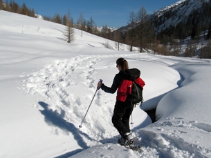

© Sascha Corti/shutterstock
We live in a world that is dependent upon energy. In Module 1 you learned about energy and energy transformations.
You considered the following module questions:
In Module 2 you will further consider the differences between the energy content of different fuels. You will use this information to evaluate alternative fuels that could be used to fuel vehicles used in your ecotour.
As you worked through Module 1, you may have added information to a concept map or graphic organizer based on the module and lesson questions listed in the Module 1 Concept Organizer. Now is a good time to review the relationships in your concept map or graphic organizer and to try to answer the module and lesson questions.
A sample Module 1 concept map shows one set of possible links between the questions. Remember that this is one possible description only—there are many other correct possibilities. However, if your completed concept map or graphic organizer differs significantly from the sample, you may wish to contact your teacher or to compare your map or organizer with those of other students in your class. This will ensure that your interpretations of lesson materials and your descriptions are accurate.